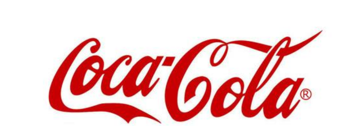

Manager, Advanced Analytics
Coca-Cola Company · Plano, TX
Dec 2022 – Present
- Managed internal and vendor data science teams, serving as technical lead and SME responsible for performance evaluation, resource allocation, and final review and approval of all deliverables, and guiding project scoping and delivery of high-impact AI/ML solutions across multiple regions.
- Represented the technical team in strategic contract negotiations, playing a key role in the acquisition and integration of NotCo's Giuseppe AI for product reinvention.
- Oversaw Statements of Work (SOW) with business stakeholders, aligning project scope, deliverables, and success metrics to organizational goals.
- Guided business across marketing, consumer insights, and supply chain to identify data-driven opportunities, define analytics roadmaps, shape project direction, and align data science initiatives to business priorities.
- Modernized analytics frameworks and implemented AI models to drive strategic insights and measurable impact; directed end-to-end data science initiatives from concept to deployment ensuring MLOps best practices, data integrity, scalability, and business relevance.
- Collaborated with data engineers to understand and structure 1PD data sources including Google Analytics (GA4), Till Data, Promo Participation, Google Ads, AppsFlyer, and WebSDK into clean, well-structured datasets and table views for use across consumer analysis projects.
- Designed and applied advanced mathematical optimization techniques (IP, MIP, NLP) to solve complex production, supply chain, and resource allocation challenges.
Azure ML · Azure Synapse · Microsoft Fabric · Azure DevOps · Power BI · Codex · Claude Code · ortools